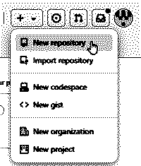
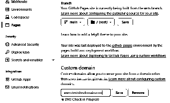
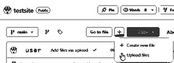
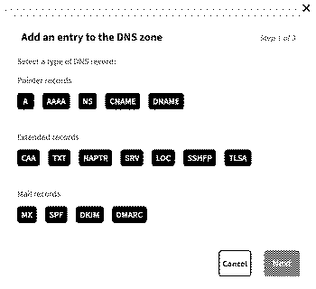

|
||||||||||||
|
|
||
/ Introduction /Learn how to upload and host your website freely on Github. Using a custom domain will also allow you to use HTTP rather than HTTPS, allowing older computers access to your website. Redirect your domain to your Github repository by altering your DNS records. / Prerequisites /I have already:
/ Github /In the upper right corner of the screen, click the "+" sign to create a repository for our new webpage. In this example we'll call it "testsite", which will generate the repository "user.github.io/testsite".

Enter the repository tab "Settings" and choose "Pages" in the menu on the left hand side. Scroll down until you reach the section "Custom domain".

Enter your (sub-)domain in the box (including www.) and click "Save". In this example we'll enter "www.testsite.domain.com". An status message below the input box will indicate "DNS Check in Progress". The check will not be able finalize though, since we haven't yet redirected our domain to Github. Head over to the "<> Code" tab. A "CNAME" file with the selected domain will be automatically generated in the repository root. It will contain only the domain you've just entered. While in the "<> Code" tab, we will upload the "index.html" and other files needed for your website.

Now we need to redirect traffic to our domain to our web page files hosted on Github, via our DNS provider (OVH Cloud). / OVH Cloud /Log in to the "Web Cloud" dashboard. Make sure you're running the dashboard in "Beta version" rather than "Standard version"! Enter the "DNS zone" tab via Web Cloud/Domain Names for your chosen domain. Delete the default "A" record(s) in the list. Next, click the "Add an entry" button on the right hand side of the screen.

Click "A", for A record. And then input the following:
All in all, repeat and add in total four new "A" records with the following IPs (each one for "testsite.domain.com"):
When the "A" records are done, it is time to add one last entry - this time a "CNAME" record pointing to your PRIMARY Github domain. Once more, click the "Add an entry" button. Click "CNAME", and add the following parameters:
If everything is done correctly, it is only a short matter of time before your website will be live! Please be patient though, the DNS redirection settings might take a couple of minutes, or sometimes even hours before working properly. / Sources / |
||
|
Tags: networking, github, ovh cloud, website, html / Published: 2025-06-02 |
|
||
/ Introduction /Learn how to upload and host your website freely on Github. Using a custom domain will also allow you to use HTTP rather than HTTPS, allowing older computers access to your website. Redirect your domain to your Github repository by altering your DNS records. / Prerequisites /I have already:
|
||
|
Tags: networking, github, ovh cloud, website, html / Published: 2025-06-02 |
| Skarven © 2025. Back to the top | ||